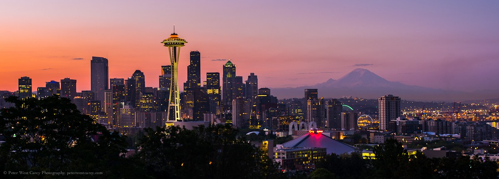

<!-- <!DOCTYPE html>
<html>
  <head>
    <title>Puget Sounds</title>
    <link rel="stylesheet" href="style.css">
  </head>
  <body>
    <header>
      <h1>Puget Sounds</h1>
    </header>
    <nav>
      <ul>
        <li>
          <a href= "grieves.html">Grieves</a>
        </li>
                <li>
                  <a href="about-us.html">About Us</a>
                </li>
        <li>
          <a href="index.html">Index</a>
        </li>
      </ul>
    </nav>
    <section>
      <h2>Seattle Music</h2>
      <p>Because Seattle is Washington's largest city, the music of Seattle has long played a major role in the music of Washington, in genres of alternative rock that included grunge, and major bands like Nirvana and Alice In Chains Soundgarden as well as Pearl Jam. Seattle remains home to several influential bands, labels, and venues.</p>
      
      <br>
      <br>
    </section>
  </body>
</html> -->
